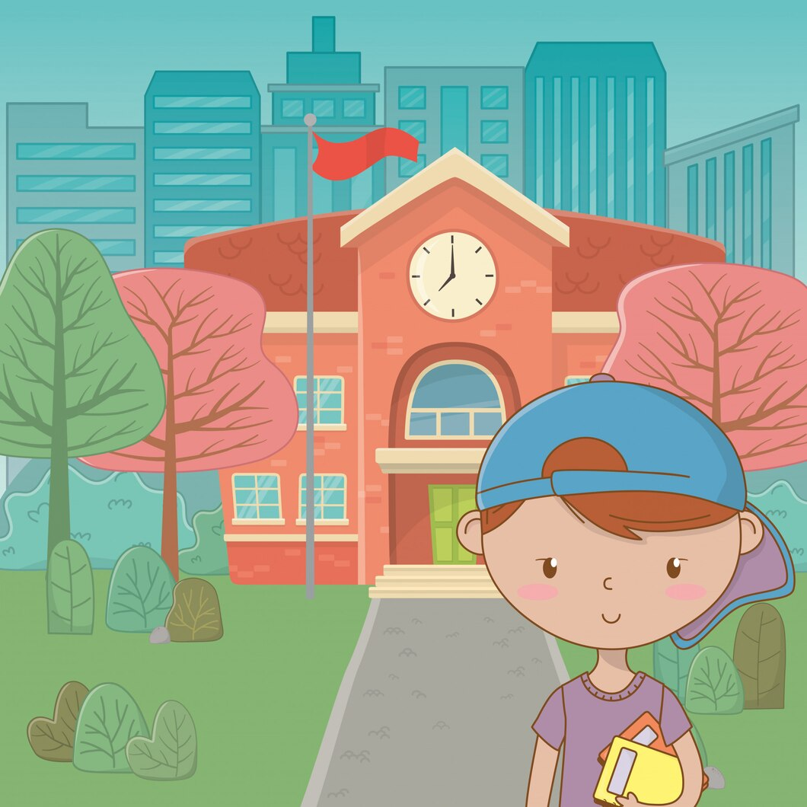

The digital divide is a problem that affects people from all walks of life. It is a multifaceted issue, but two main characteristics define this gap: access to high-speed internet and access to reliable devices.
In some areas, internet access is either limited, unavailable, or unaffordable for those who could be equipped. This leaves countless students and professionals to rely on public computers or their mobile devices as their only tools to exist in an increasingly digital world.
In K-12 settings, a digital divide is commonly seen when students have limited or no internet access at home. Students from low-income families can also struggle to have devices like laptops or tablets which are often necessary tools, especially as STEAM education becomes a wider focus in K-12 curricula.